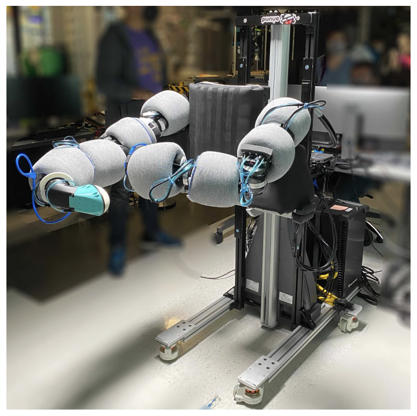
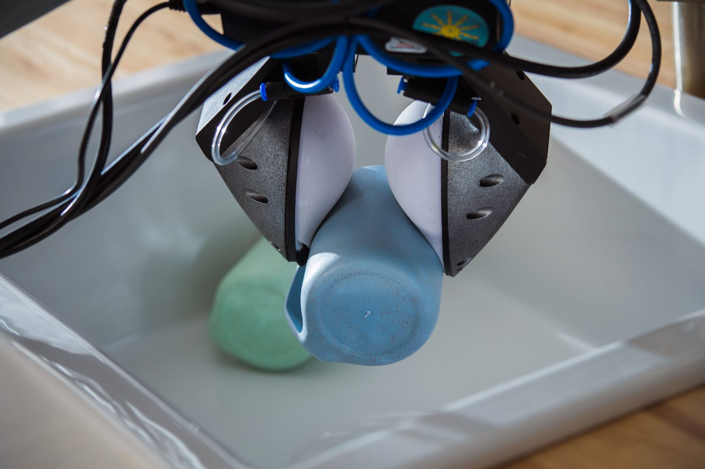
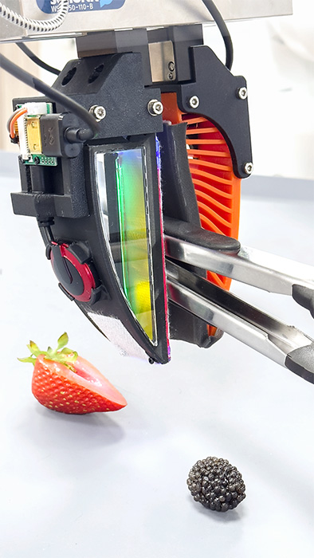
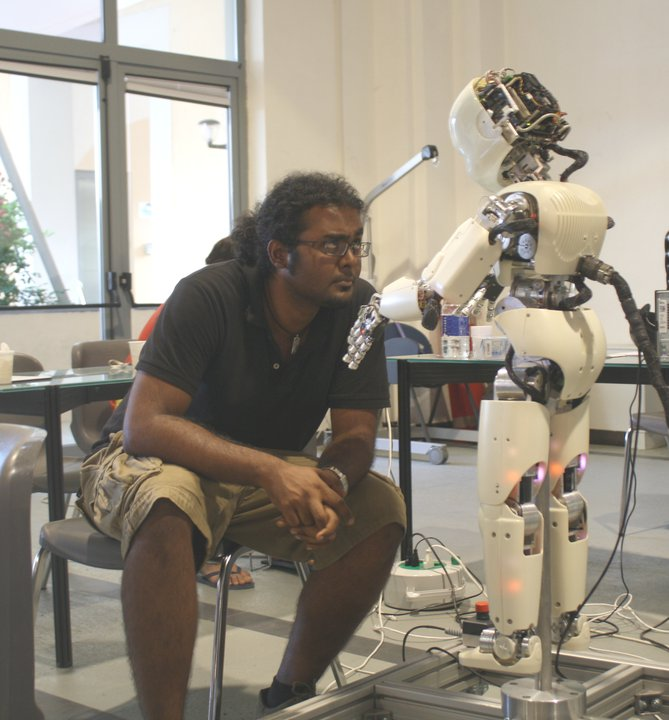
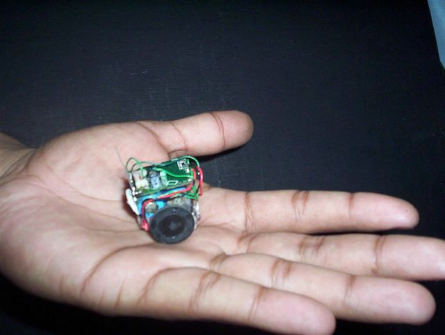
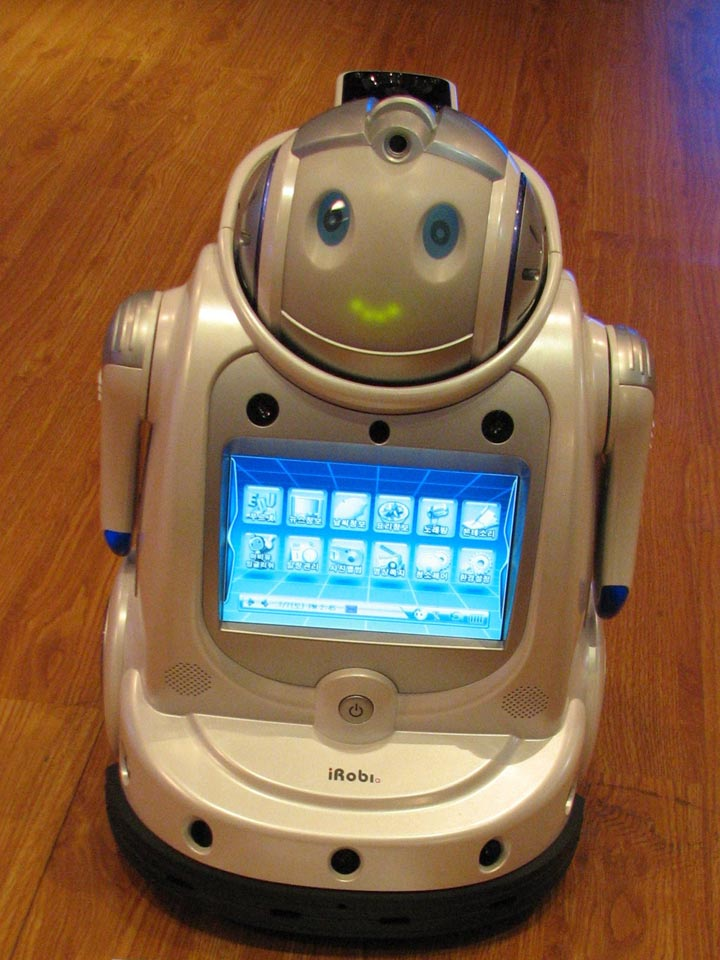
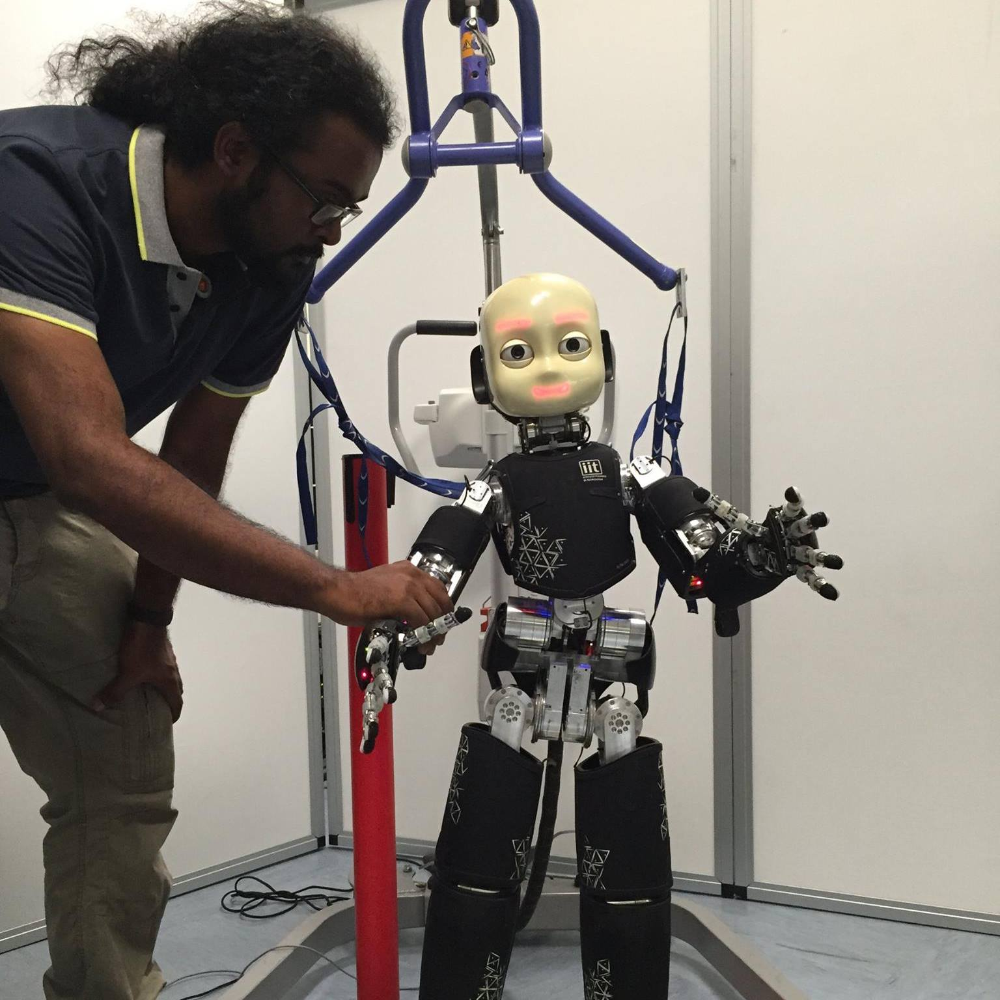
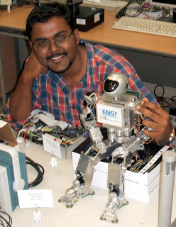

Selected Talks

|
Tactile-Informed Foundation Models for General-Purpose Robots Guest Lecture, UT Austin (Host: Prof. Lilian Chin), 2025 [cite: 10, 101] Slides (PDF) / Video Discussing the intersection of Large Behavior Models (LBMs) and multimodal sensing strategy at TRI. |

|
Scaling Robot Learning with Tactile-Aware Policies Guest Lecture, UIUC (Host: Prof. Joohyung Kim), 2025 Slides (PDF) / Video On building scalable data collection frameworks and evaluation methodologies for domestic manipulation[cite: 17]. |

|
Large Behavior Models & Contact-Rich Manipulation Guest Lecture, Stanford (Host: Prof. Shuran Song), 2024 [cite: 81, 101] Slides (PDF) / Video Insight into LBM 1.0 and the strategy for multitask dexterous manipulation[cite: 17, 80]. |

|
6.843 Robotic Manipulation: Soft Sensing & Perceptive Grippers Guest Lecture, MIT (Host: Prof. Russ Tedrake), 2023 [cite: 20, 101] Slides (PDF) / Video Hardware and control integration for the Soft Bubble and Punyo project platforms[cite: 18, 19]. |
|
|
Dense Visuotactile Sensing for Robust Interaction Guest Lecture Series, MIT (Host: Prof. Ted Adelson), 2022-2024 [cite: 19, 101] Slides (PDF) / Video Exploring award-winning tactile sensor designs and contact-aware policy learning[cite: 11]. |
Robot Gallery







